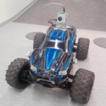
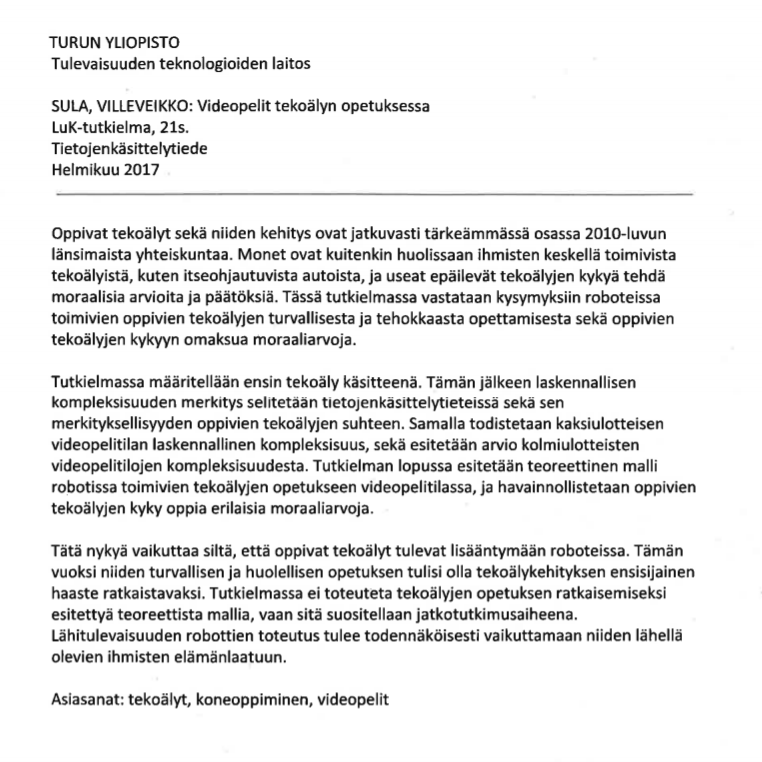

Quantum horror was a point-and-click horror game made in the 2015 Quantum Game Jam. The game's entry can be found at the Game Jam site.
I have categorized the projects I have been working with down below. I currently work in web development, but I also have some history with artificial intelligence, embedded electronics and videogames. The list is still incomplete.
|
Ö is a functional programming language made in Finnish. One of the design goals was to make the language simple and easy to learn for students with no experience of functional programming languages. You can try Ö here, however the website is currently only in Finnish. Ö was made for a course project, and some things (like the documentation) is still unfinished. |
|  |
ARCar was a Capstone project assigned to our team of four students. Our task was to automate a heavy-weight RC car so that it would be able to follow a track assigned to it. The project won the Best Tech Research award at the ICT Showroom 2018 Student Project Exhibition and Competition. More information about the project can be found on the Capstone page of the University of Turku, and the source files of the project are hosted on the university's GitLab server. |
|
|
Quantum horror was a point-and-click horror game made in the 2015 Quantum Game Jam. The game's entry can be found at the Game Jam site. |
|  |
I wrote my bachelor's thesis for the University of Turku about the usage of videogame-like environments for learning-based algorithms. The abstract (in Finnish) can be found here. |